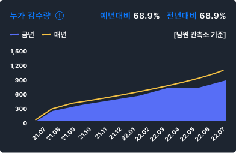

Digital GARAM
가뭄
가뭄닫기
강수 현황
2022-07-27

생공 현황
2022-07-27| 수원 |
개수 (개) |
평균저수율 (%) |
예년저수율 (%) |
가뭄단계 |
|---|---|---|---|---|
| 다목점댐 | 00 | 00 | 00 | 정상 |
| 용수댐 | 00 | 00 | 00 | 정상 |
| 지차제 | 00 | 00 | 00 | 관심 |
| 농업용 | 00 | 00 | 00 | 정상 |
| 하천 | 00 | 00 | 00 | 관심 |
| 하천 | 00 | 00 | 00 | 관심 |
| 하천 | 00 | 00 | 00 | 관심 |
| 하천 | 00 | 00 | 00 | 관심 |
| 하천 | 00 | 00 | 00 | 관심 |
| 하천 | 00 | 00 | 00 | 관심 |
| 하천 | 00 | 00 | 00 | 관심 |
농업 현황
2022-07-27
가뭄 모니터링 및 전망
날짜선택
주요상황 메세지
- 해당지역 (유역)의 최근 1개월 누적강수량은 00mm로 예년대비 00% 낮은 수준입니다.
- 해당지역 (유역)의 00개 지역이 관심 이상으로 예년보다 많습니다.
- 해당지역 (유역)은 1개월 후 관심이상이 전달보다 00개 더 늘어날 전망입니다.
- 해당지역 (유역)의 최근 1개월 누적강수량은 00mm로 예년대비 00% 낮은 수준입니다.
- 해당지역 (유역)의 00개 지역이 관심 이상으로 예년보다 많습니다.
- 해당지역 (유역)은 1개월 후 관심이상이 전달보다 00개 더 늘어날 전망입니다.
- 해당지역 (유역)의 최근 1개월 누적강수량은 00mm로 예년대비 00% 낮은 수준입니다.
- 해당지역 (유역)의 00개 지역이 관심 이상으로 예년보다 많습니다.
- 해당지역 (유역)은 1개월 후 관심이상이 전달보다 00개 더 늘어날 전망입니다.
- 해당지역 (유역)의 최근 1개월 누적강수량은 00mm로 예년대비 00% 낮은 수준입니다.
- 해당지역 (유역)의 00개 지역이 관심 이상으로 예년보다 많습니다.
- 해당지역 (유역)은 1개월 후 관심이상이 전달보다 00개 더 늘어날 전망입니다.